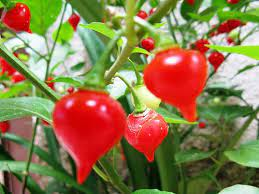

Sobre a pimenta
A biquinho começou a ser comercializada no Triângulo Mineiro, no início da década de 2000, mas hoje pode ser encontrada em todo o território nacional.
A pimenta biquinho é facilmente reconhecida pelo seu formato único, que lhe dá o nome. Os frutos pequenos, com cerca de 3 cm de comprimento, são arredondados e com ponta em forma de bico. Quando imaturos, eles são de cor verde-clara, mas podem amadurecer para três cores diferentes: salmão, amarelo e vermelho.

Beneficios da Pimenta
Ela possui vitaminas C, B6 e K1, e é rica em cálcio, ferro, magnésio, fósforo e sódio, além do betacaroteno. Com essas propriedades, a pimenta-de-cheiro é considerada um bom antioxidante, ajuda o sistema imunológico, ajuda a controlar o açúcar no sangue, a prevenir inflamações e a diminuir dores musculares.
Como fazer o plantio da pimenta biquinho?
Escolha um local ensolarado e prepare a terra, preferencialmente com húmus ou adubo NPK (1 copo para um espaço de 10m² é o suficiente). Com o dedo, faça pequenas covinhas, com o dobro de tamanho das sementes, Coloque, no máximo, de 3 a 4 sementes de pimenta biquinho em cada buraco. Depois de adicionar as sementes, cubra os espaços com terra fofa e pronto! A germinação irá acontecer em uma a duas semanas.
A Origem da pimenta biquinho
Genuinamente brasileira, a biquinho começou a ser comercializada no Triângulo Mineiro, no início da década de 2000, mas hoje pode ser encontrada em todo o território nacional. Também chamada pimenta de bico, ela pertence à mesma espécie das pimentas habanero, de-cheiro, bode, cumari-do-Pará e murupi.
A pimenta biquinho é picante?
A pimenta biquinho é uma delícia de tira gosto, seu sabor doce é um excelente tempero para culinária. A pimenta biquinho têm um sabor marcante, porém sem queimar a boca, por não ter o ardor característico desse tipo de especiaria, tem conquistado fãs por todo o Brasil .